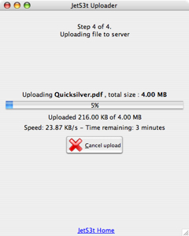
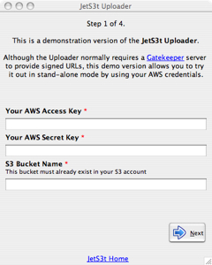
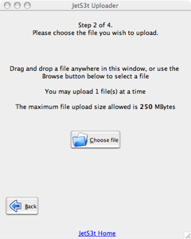
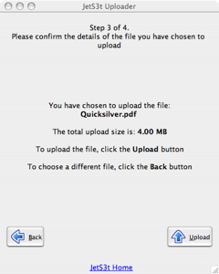
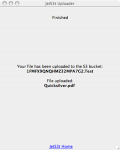
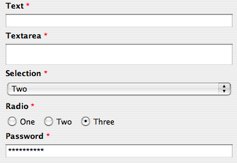
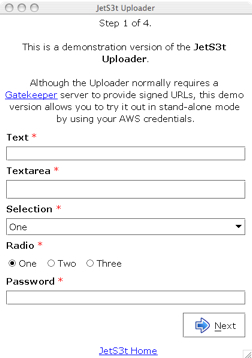

JetS3t Uploader
Uploader is a simple wizard-based application that S3 account holders (Service Providers) may provide to clients to allow them to upload files to S3 without requiring access to the Service Provider's S3 credentials. The Uploader accesses S3 accounts via a Gatekeeper service. The Gatekeeper is a specialised application that will only be of interest to Service Providers who use S3 for storage behind the scenes.
The Uploader is likely to be useful mainly to Service Providers who will use this document to customise and brand the application, and configure it to interact with their own Gatekeeper service which the Uploader will contact for permission to perform operations in S3. All configuration is performed in the uploader.properties configuration file, such as the one available in the configs directory of the JetS3t distribution.
A demonstration version of the Uploader, which doesn't require a Gatekeeper service, is available via the Applications page.

Uploader offers the following capabilities:
- Simple wizard workflow to upload files
- Configurable limits on the number, size and type of files that can be uploaded
- Configurable user input fields
- Highly configurable GUI display
- Works with Gatekeeper server-side authentication servlet
- Basic skinning support (this is fairly primitive though)
- Basic branding support
- Option to generate an XML Summary document after successful uploads
- When run as an applet, can read variables from the surrounding HTML web page via applet parameters
Workflow Wizard
The Uploader displays a simple wizard-based user
interface that allows users to step through the process of
uploading files. Each step in the process displays a
separate Screen - there are five in total.
The content of each screen is configurable (see
GUI Configuration below).
| Screen 1 - User Input | Screen 2 - Choose File |
|---|---|
| Displays the User Input fields that prompt a user for information | Prompts the user to choose a file to upload, by drag-and-dropping a file into a drop zone or by selecting it with a browse button. |
|  |  |
| Screen 3 - Confirm Upload | Screen 4 - Upload Progress |
| Displays the file(s) the user has selected to upload | Displays the progress of a file upload, and allows a user to cancel the upload |
|  | |
| Screen 5 - Finished | |
| Displays a message telling the user the upload was successful, or an error message if a fatal error occurred | |
|  |
Limiting Files
The Uploader can be set to limit the number, size and type of files it will accept. These settings are configured in uploader.properties
| File Upload Limiting | |
|---|---|
| file.maxCount | How many files may be uploaded at a
time
Should be a value greater than or equal to 1. Default: 1 |
| file.minSizeMB | The minimum size of each file the
Uploader will allow, in Megabytes. If set to 0, even
empty files can be uploaded
Default: 0 |
| file.maxSizeMB | The maximum size of each file the
Uploader will allow, in Megabytes. If set to 0, the
files can be any size.
Default: 200 |
| file.extensions | If specified, only files with an
extension matching one in the comma-separated list will
be allowed. If this property is not set, any file
type/name can be uploaded
Default: Not set |
User Input Fields
The Uploader can be set to display User Input fields to the user on Screen 1. These fields can have any name, and a range of GUI elements can be used for the user to provide an answer. When the user enters information for these fields, this information is provided to the Gatekeeper service when the Uploader requests permission to perform operations.

The demonstration version of the Uploader, as available online or in the JetS3t distribution archive, includes the field names AwsAccessKey, AwsSecretKey and S3BucketName. These are "magic" field names to allow the Uploader to be run in demonstration mode, where there is no Gatekeeper service available and users are required to specify their AWS credentials and the target S3 bucket. These fields should not be used except for demonstration mode.
| User Input Fields | |
|---|---|
| Each field must have a unique id number which determines the order in which the fields are displayed. This id number must be from 1 to n, where n is the number of fields. | |
| field.id.name | A unique name for the field. This name
is not displayed to the user and should be a single
word without spaces, eg favouriteColour
Always required |
| field.id.type | The GUI element to display for the
field, one of: textarea, text,
password, selection, radio
Always required |
| field.id.options | For selection or radio
fields, a comma-separated list of options the user can
choose from
For example, in the image above the options setting used is One,Two,ThreeOnly required for selection or radio fields |
| field.id.prompt | The text to display to the user for
the field. This text can be HTML text containing simple
text formatting, such as colour or font changes
Always required |
GUI Configuration
The content of the Screens displayed in the Uploader is configurable in uploader.properties. The different screens have different display items, these are mentioned when relevant.
The Uploader allows for parameter substitution to be performed in text messages it displays. Replacement variables are used with the format ${variableName}, where variableName is any of the following items:
- Properties in the file uploader.properties
- User Inputs
- Applet or stand-alone parameters
- File constraints (from uploader.properties): maxFileSize, maxFileCount, validFileExtensions
- Chosen file information (only available after files have been chosen): fileNameList, filesSize
| Screen Display Settings | |
|---|---|
| Each Screen has a unique id number which references the screen number, from 1 to 5. Screens all have a title, and images/text/tooltips for the back and next buttons - though it may not make sense to display buttons on some screens. See the sample uploader.properties file included in the configs directory of the JetS3t distributions for more information and examples. | |
| screen.id.title | Text displayed at the top of the
Uploader display, may be HTML
Always required |
| screen.id.nextButton.text | The text displayed on the Next button
Required only when the next button should be visible: Screens 1, 3 |
| screen.id.nextButton.tooltip | Tooltip text for the Next button
Required only when the next button should be visible: Screens 1, 3 |
| screen.id.nextButton.image | Path to an image icon for the Next
button
Required only when the next button should be visible: Screens 1, 3 |
| screen.id.backButton.text | The text displayed on the Back button
Required only when the back button should be visible: Screens 2, 3 |
| screen.id.backButton.tooltip | Tooltip text for the Back button
Required only when the back button should be visible: Screens 2, 3 |
| screen.id.backButton.image | Path to an image icon for the Back
button
Required only when the back button should be visible: Screens 2, 3 |
| screen.2.dragDropPrompt | Instructions for user to drag-drop
file onto pane, or use browse button
Screen 2 only |
| screen.2.browseButton.text | The text displayed on the file Browse
button
Screen 2 only |
| screen.2.browseButton.tooltip | Tooltip text for the file Browse
button
Screen 2 only |
| screen.2.browseButton.image | Path to an image icon for the file
Browse button
Screen 2 only |
| screen.3.fileInformation | Text with information about the file
to be uploaded
Screen 3 only |
| screen.4.connectingMessage | Message displayed while Uploader makes
initial connection to S3
Screen 4 only |
| screen.4.hashingMessage | Message displayed while Uploader
hashes the upload file
Screen 4 only |
| screen.4.fileInformation | Text with information about the
file(s) being uploaded
Screen 4 only |
| screen.4.cancelButton.* | Button properties for the Cancel
Upload button: text, image, tooltip
Screen 4 only |
| screen.5.thankyouMessage | Thankyou message to display when the
upload completes successfully
Screen 5 only |
| screen.5.errorMessage | Error message to display when an
upload fails with a fatal error.
Screen 5 only |
Skinning
Uploader support a fairly primitive skinning mechanism. To fully control the skinning special Java classes must be created (see documentation for SkinFactory) but there is an example implementation for HTML skinning included with Uploader. The HTML implementation is intended for when Uploader is run as an applet embedded in a Service Provider's web site, and will allow the provider to make the applet better match their web page design.
The Uploader with HTML skinning applied. The background
colour is white, and the font is Verdana:

| Skinning Properties | |
|---|---|
| Each Screen has a unique id number which references the screen number, from 1 to 5. Screens all have a title, and images/text/tooltips for the back and next buttons - though it may not make sense to display buttons on some screens. See the sample uploader.properties file included in the configs directory of the JetS3t distributions for more information and examples. | |
| skin.name | The name of the skin implementation
code package to use. This must be available in a
package matching the skin.name inside
org.jets3t.gui.skins.
Note: The only skin implementation included with the Uploader is called html If this property is not set, or the value is default, no skinning is applied. |
| HTML Skinning Properties | |
| Skinning properties specific to the HTML implementation | |
| skin.html.textColor | The colour of the text, in HTML-compatible format (eg "red", "#FAFAFA") |
| skin.html.backgroundColor | The colour of the background, in HTML-compatible format (eg "red", "#FAFAFA") |
| skin.html.font | The font to use, specified in a format compatible with the Java font class method Font.decode(fontValue) (eg "Verdana-PLAIN-15") |
Branding
In addition to having configurable text content and skins, the Uploader can be branded with settings that control the application title, icon, and footer text.
| Branding Properties | |
|---|---|
| gui.applicationTitle | The text displayed in the
application's title bar, if it's running in stand-alone
mode
Only applicable to stand-alone mode |
| gui.applicationIcon | The icon displayed in the
application's title bar, if it's running in stand-alone
mode
Only applicable to stand-alone mode |
| gui.footerHtml | HTML text displayed in the bottom of the Uploader's window. This would most commonly be used to contain a link to a Service Provider's website |
| gui.footerIcon | An icon displayed in the bottom of the Uploader's window, next to the footer text |
Gatekeeper Authorization
The Uploader communicates with a Gatekeeper service to request authorization to perform its uploads. A general description of a Gatekeeper service is documented in Gatekeeper Concepts. Uploader should work with any Gatekeeper service implemented following these guidelines, but the easiest way to provide an authorization service may be to use the Gatekeeper Servlet implementation provided with JetS3t.
The only configuration required to have the Uploader communicate with a Gatekeeper service is:
- Remove the user input fields AwsAccessKey, AwsSecretKey and S3BucketName - these should only ever be used in the demonstration version of Uploader
- Provider the URL to a Gatekeeper service
| Gatekeeper Properties | |
|---|---|
| gatekeeperUrl | The URL of a Gatekeeper service |
XML Summary
An XML Summary document can be created by the Uploader to describe an upload operation that has completed successfully. The XML document includes information about the files uploaded, and a full summary of the User Input field values provided by the user.
The XML Summary is turned on by setting the property applet.params in uploader.properties to true. The Uploader also requires that the Gatekeeper it uses support Transaction IDs, such that the Gatekeeper's response message will include a transactionId. This transaction ID is used as a prefix for the name for the XML summary document object uploaded to S3: transactionId.xml.
Note: If the XML Summary is turned on the Uploader will perform two series of uploads. The first series will upload the actual files, and the second will only upload the XML Summary document. This way, you can be assured that if a particular XML document exists in S3, the corresponding upload transaction was completed successfully.
Applet Parameters
When the Uploader is run as an applet it can be convenient to provide it with configuration information through the HTML page the applet is embedded in. This could allow Service Providers to include a client's name in the Uploader's text messages. The Uploader refers to the property applet.params in uploader.properties to learn which applet parameters it should expect. This property can include multiple parameter names in a comma-separated list.